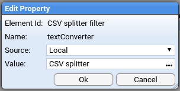

Pipeline Processing
Create a pipeline
Pipelines control how data is processed in Stroom. Typically you’re going to want to do a lot of the same stuff for every pipeline, i.e. similar transformations, indexing, writing out data. You can actually create a template pipeline and inherit from it, tweaking what you need to for this or that feed. We’re not doing that now because we want to show how to create one from scratch.

- Create a pipeline by right-clicking our
Stroom 101folder. Call it something likeCSV to XML pipeline. - Select Structure from the top of the new tab. This is the most important view for the pipeline because it shows what will actually happen on the pipeline.
- Check Advanced Mode so that we can actually edit things.

We already have a Source element. Unlike most other pipeline elements this isn’t something we need to configure. It’s just there to show the starting point. Data gets into the pipeline via other means - we’ll describe this in detail later.
Add a data splitter
Data splitters are powerful, and a lot we can say about them. Here we’re just going to make a basic one.
Create a CSV splitter
We have CSV in the following form:
id,guid,from_ip,to_ip,application
1,10990cde-1084-4006-aaf3-7fe52b62ce06,159.161.108.105,217.151.32.69,Tres-Zap
2,633aa1a8-04ff-442d-ad9a-03ce9166a63a,210.14.34.58,133.136.48.23,Sub-Ex
To process this we need to know if there’s a header row, and what the delimiters are. This is a job for a Data Splitter.
The splitter is actually a type of Text Converter, so lets create one of those:

Call it something like CSV splitter. In the new tab you need to tell the Text Converter that it’ll be a Data Splitter:

Now go to the Conversion tab. What you need to put in here is specific to the built-in Data Splitter functionality, so I’m just going to tell you what you’re going to need:
<?xml version="1.1" encoding="UTF-8"?>
<dataSplitter xmlns="data-splitter:3" xmlns:xsi="http://www.w3.org/2001/XMLSchema-instance" xsi:schemaLocation="data-splitter:3 file://data-splitter-v3.0.1.xsd" version="3.0">
<!-- The first line contains the field names -->
<split delimiter="\n" maxMatch="1">
<group>
<split delimiter="," containerStart=""" containerEnd=""">
<var id="heading" />
</split>
</group>
</split>
<!-- All subsequent lines are records -->
<split delimiter="\n">
<group>
<split delimiter="," containerStart=""" containerEnd=""">
<data name="$heading$1" value="$1" />
</split>
</group>
</split>
</dataSplitter>
You can see that it uses the data-splitter-v3.0.1.xsd that we imported earlier. Save it by clicking the save icon ( ).
).
So we now have a configured, re-usable data splitter for CSV files that have headers. We need to add this to our pipeline as a filter, so head back to the pipeline’s Structure section and add a DSParser, as below. Call it something like CSV splitter filter:

Now we have a pipeline that looks like this:

Click on the CSV splitter filter element and the pane below will show it’s properties. We need to tell it to use our newly created CSV splitter. Double click the textConverter property and change Value to the actual CSV splitter:

Test the csv splitter
So now we have CSV data in Stroom and a pipeline that is configured to process CSV data. We’ve done a fair few things so far and are we sure the pipeline is correctly configured? We can do some debugging and find out.
In Stroom you can step through you records and see what the output is at each stage. It’s easy to start doing this. The first thing to do is to open your CSV_FEED feed, then click the big blue stepping button at the bottom right:

You’ll be asked to select a pipeline:

Now you get a view that’s similar to your feed view, except it also shows the pipeline:

It also has stepping controls. Click the green step forward icon ( ). You should see something like this:
). You should see something like this:

Great! If you don’t see this then there’s something wrong. Click on CSV splitter filter. You’ll see the conversion code and hopefully some errors. Some issues might be: did you remember to import the data splitter schema into Stroom? Did you remember to confgure the Text Converter to be a Data Splitter?
If everything went fine then click the step forward button a few more times and you’ll see the yellow selection move down as you process each row.
What we actually want to see is the output from the Text Converter, so click on CSV splitter filter. You’ll see the conversion code we entered earlier and below two panes, one containing the CSV and one containing the split-up text, in XML form:

So here we have some XML in a basic format we call the records format. You can see the schema for records in the XML schemas folder.
Add XSLT to transform records format XML into something else
Create the XSLT filter
This process is very similar to creating the CSV splitter:
- Create the XSLT filter
- Add it to the pipeline
- Step through to make sure it’s doing what we expect
Create the XSLT filter, calling it something like XSLT:

On the new tab click on XSLT. This is another big text field but this one accepts XSLT. This one will be very basic and just takes the split up data and puts it into fields. The XSLT for this is below but if you’d like to tinker then go ahead.
<?xml version="1.1" encoding="UTF-8" ?>
<xsl:stylesheet xpath-default-namespace="records:2" xmlns:stroom="stroom" xmlns:xsl="http://www.w3.org/1999/XSL/Transform" xmlns:xsi="http://www.w3.org/2001/XMLSchema-instance" version="2.0">
<xsl:template match="records">
<Events>
<xsl:apply-templates />
</Events>
</xsl:template>
<xsl:template match="record">
<xsl:variable name="id" select="data[@name='id']/@value" />
<xsl:variable name="guid" select="data[@name='guid']/@value" />
<xsl:variable name="from_ip" select="data[@name='from_ip']/@value" />
<xsl:variable name="to_ip" select="data[@name='to_ip']/@value" />
<xsl:variable name="application" select="data[@name='application']/@value" />
<Event>
<Id><xsl:value-of select="$id" /></Id>
<Guid><xsl:value-of select="$guid" /></Guid>
<FromIp><xsl:value-of select="$from_ip" /></FromIp>
<ToIp><xsl:value-of select="$to_ip" /></ToIp>
<Application><xsl:value-of select="$application" /></Application>
</Event>
</xsl:template>
</xsl:stylesheet>
Make sure you save it.
Go back to the Structure section of the pipeline and add an XSLTFilter element. Call it something like XSLT filter.

Select the XSLT filter and configure it to use the actual XSLT you just created by double-clicking xslt in the properties:

In the dialog make sure the value is the XSLT filter. Save the pipeline.
Test the XSLT filter
We’re going to test this in the same way we tested the CSV splitter, by clicking the big blue button on the feed. Click the step forward button ( ) a few times to make sure it’s working then click on the XSLT element. This time you should see the XSLT filter there too, as well as the basic XML being transformed into more useful XML:
) a few times to make sure it’s working then click on the XSLT element. This time you should see the XSLT filter there too, as well as the basic XML being transformed into more useful XML:

Fantastic! Data converted! Well done if you’ve got this far. Really, there are lots of steps and things that could go wrong and you’ve persevered. There’s a few more things to get this pipeline ready for doing this task for real. We need to get this data to a destination.
Outputting the transformed data
Create the XML writer
What’s an XML Writer and why do you need one? The XSLT filter doesn’t actually write XML but instead just passes XML events from one filter to another. In order to write XML out you need an XML writer. You don’t need to create one outside the pipeline (in the way you did with the CSV splitter and the XSLT filter). An XML writer is just added to the pipeline like this:

That’s it, no other configuration necessary.
Create the destination
We need to do something with the serialised XML. We’ll write it to a stream. To do this we create a stream appender:

Unlike the Source element this element needs to be configured. We need to configure two things: the streamType and the destination feed.
Setting the feed
We’ll send the output to the CSV_FEED - all data associated with this feed will be in the same place. To do that we edit the feed property and set it to CSV_FEED:

We also need to edit the streamType property:We set the streamType to Events:


That’s it! Our pipeline is configured!
Test the destination
We can test the XML writer and the streamAppender using the same stepping feature. Make sure you’ve saved the pipeline and set a new stepping session running. If you click on the stream appender you’ll see something like this:

Set the pipeline running
Obviously you don’t want to step through your data one by one. This all needs automation, and this is what Processors are for. The processor works in the background to take any unprocessed data from a feed and put it through a pipeline. So far everything on our EXAMPLE_IN feed is unprocessed.
Create a processor
Processors are created from the Processors section of the pipeline:

Click the add button  and configure the huge dialog. You only need to set the incoming feed and the stream types:
and configure the huge dialog. You only need to set the incoming feed and the stream types:
(
Now you’ll see a very wide table looking something like this:

This shows two things:
- The processor for the pipeline
- The filter that determines what data is passed to the processor
If you scroll all the way over to the right you’ll see the Enabled checkbox:

Check enabled for the processor and the filter you’ve just created. This is it, everything we’ve done is about to start working on its own, just like it would in a real configuration.
If you keep refreshing this table it will show you the processing status which should change after a few seconds to show that the data you have uploaded is being or has been processed. Once this has happened you should be able to open the destination feed and see the output data (or errors if there were any).

You can see that there are the Raw Events and the processed Events. If you click on the Events then you can see all the XML that we’ve produced.
Troubleshooting
If nothing happens you might need to enable stream processing. This was explained earlier.
Now you’ve processed your data you can go ahead and index it.